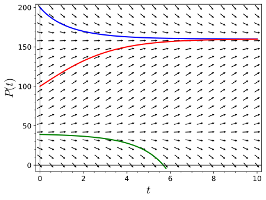
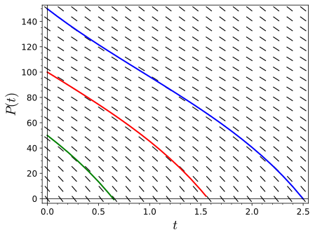
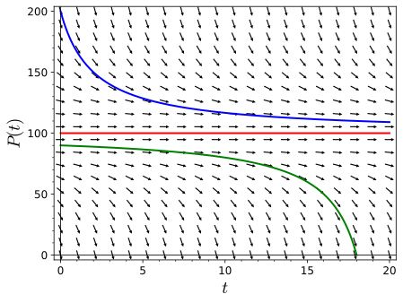
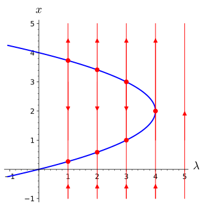
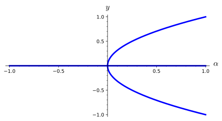

has a bifurcation at \(\lambda = \lambda_0\) if a change in the number or type of equilibrium solutions occurs.
To understand that bifurcation diagrams are an effective way of representing the nature of the solutions of a one-parameter family of differential equations.
Many of the equations that we have examined have a parameter, which means that we actually have a family of differential equations. For example,
has two parameters, \(k\) and \(N\text{.}\) In this section we will investigate how the solutions of a differential equation vary as we change the value of a parameter.
Subsection1.7.1The Logistic Model with Harvesting Revisited
Recall how we modeled logistic growth in a trout pond in Example 1.3.9 with the equation
There are two equilibrium solutions for this equation, \(P_1 = 160\) (a sink) and \(P_2 = 40\) (a source). If the population of the pond falls below 40, then the fish will die out unless the pond is restocked or fishing is banned (Figure 1.7.1).

Figure1.7.1.Harvesting with \(H = 32\)
Now let us see what happens when we allow more fishing in our pond, say \(H = 100\text{.}\) Our differential equation now becomes
which means that equation (1.7.1) has no real solutions and that we have no equilibrium solutions. Furthermore, \(dP/dt \lt 0\) for all values of \(P\text{.}\) This means that no matter how many fish are in the pond initially, the trout population will eventually die out due to overfishing (Figure 1.7.2).

Figure1.7.2.Harvesting with \(H = 100\)
Finally, we will let \(H = 50\text{.}\) In this case, we must solve
in order to determine any equilibrium solutions. We now obtain a single equilibrium solution at \(P = 100\text{.}\) In fact, \(P = 100\) will be a node. For values of \(P \gt 100\) as well as values of \(P \lt 100\text{,}\) we have \(dP/dt \lt 0\text{,}\) and the number of fish in the pond will decrease (Figure 1.7.3).

Figure1.7.3.Harvesting with \(H = 50\)
To better understand what is happening, we will generalize our model. Suppose that a population with a limited carrying capacity \(N\) is modeled with the logistic equation
for all values of \(P\text{.}\) In particular, all solutions of \(dP/dt = f_H(P)\) tend towards negative infinity as \(t \to \infty\text{.}\) In this case, the population is doomed to extinction no matter how large the initial population is. Since negative populations do not make sense, we say that the population is extinct when \(P = 0\text{.}\)
On the other hand, if \(H \lt kN/4\text{,}\) we have equilibrium solutions at
The first equilibrium solution, \(P_1\) is a sink, while the second, \(P_2\) is a source.
Finally, if \(H = kN/4\text{,}\) then we will have exactly one equilibrium solution at \(P = N/2\text{.}\) Although \(dP/dt \lt 0\) for all \(P \neq N/2\text{,}\) we see that \(P \to N/2\) as \(t \to \infty\) for all initial values of \(P\) greater than \(N/2\text{.}\) For initial values of \(P\) less than \(N/2\text{,}\) solutions tend towards \(- \infty\) as \(t \to \infty\text{.}\) Thus, the initial population of fish must be at least \(kN/4\text{;}\) otherwise, the fish will go extinct.
In our example, we have a family of differential equations—one for each value of \(H\text{,}\)
A small change in \(H\) can have a dramatic effect on how the solutions of the differential equation behave. Changing the value of \(H\) from \(50\) to \(50.1\) will doom the population of fish to extinction no matter what the initial population is. As we increase the value of \(H\text{,}\) the number of equilibrium solutions changes from two to one and then to none. This change occurs exactly at \(H = 50\text{.}\) We say that a bifurcation occurs at \(H = 50\) for equation (1.7.2).
Activity1.7.1.Upland Bird Populations.
The chukar partridge, or simply chukar, is a upland gamebird in the pheasant family. Originally native to Asia and ranging from the eastern Mediterranean to Himalayas, the chukar has been widely introduced as an upland game bird with populations now established in the United States, Canada, Chile, Argentina, New Zealand and Hawaii. One particularly good area for hunting chukar is the western Great Basin area of the U.S. (eastern Oregon and Washington and western Idaho).
(a)
Suppose that the population of chukar on a private game ranch in eastern Oregon grows logisitically. Estimates tell us that the one hundred square mile ranch and that the ranch can support at most \(120\) birds per square mile. The growth rate of the chukar population is estimated to be \(1.5\) birds per year. Model the growth of the chukar population with an initial value problem.
(b)
Suppose that hunting on the ranch is restricted to guests and the average guest harvest \(10\) chukars per visit. Modify the model in part (a) to take into account the effect that hunting has on the chukar population.
(c)
What is the maximum number of guests that the ranch can accommodate and still maintain a healthy population of game birds? How many chukar per square mile would be needed to allow this many guests?
is a called one-parameter family of differential equations. For each value of \(\lambda\text{,}\) we obtain an autonomous differential equation, and for each value of \(\lambda\text{,}\) we have a different phase line to examine.
For \(\lambda = 0\text{,}\) the differential equation
In fact, the number of equilibrium solutions for (1.7.3) changes at \(\lambda = 4\text{.}\) We say that \(\lambda = 4\) is a bifurcation value for the differential equation
For \(\lambda \lt 4\text{,}\) we have two equilibrium solutions.
\begin{equation*}
x = 2 \pm \sqrt{4 - \lambda}.
\end{equation*}
For values of \(\lambda \gt 4\text{,}\) there are no equilibrium solutions. We can record all of the information for the various values in a graph called the bifurcation diagram. The horizontal axis is \(\lambda\) and the vertical axis is \(x\text{.}\) Over each value of \(\lambda\text{,}\) we will plot the corresponding phase line. The curve in the graph represents the various equilibrium solutions for the different values of \(\lambda\text{.}\) The bifurcation diagram for equation (1.7.4) is a parabola (Figure 1.7.7). We have a phase line for each value of \(\lambda\text{.}\)

Figure1.7.7.Bifurcation diagram for \(x' = x^2 - 4x + \lambda\)
Bifurcations for a one-parameter family of differential equations \(dx/dt = f_\lambda(x)\) are, in fact, rare. Let us consider a bifurcation where a sink changes to a source as we vary the parameter \(\lambda\text{.}\) Suppose that for \(\lambda = \lambda_0\text{,}\) we have a sink at \(x_0\text{.}\) Then
Furthermore, the graph of \(f_{\lambda_0}(x)\) must be decreasing for \(x\) near \(x_0\text{,}\) since \(f_{\lambda_0}(x)\) must be postive for values of \(x \lt x_0\) and negative for values of \(x \gt x_0\text{.}\) In other words, \(f'_{\lambda_0}(x) \lt 0\) for \(x\) near \(x_0\) with \(f'_{\lambda_0}(x_0) \lt 0\text{,}\) then for all \(\lambda_1\) sufficiently close to \(\lambda_0\text{,}\) the differential equation
must have sink at a point \(x = x_1\) very close to \(x_0\text{.}\) A similar situation holds if \(x_0\) is a source and \(f'_{\lambda_0}(x_0) \gt 0\text{.}\) Thus, bifurcations can only occur when \(f_{\lambda_0}(x_0) = 0\) and \(f'_{\lambda_0}(x_0) = 0\text{.}\)
\begin{equation*}
\frac{dy}{dt} = y^3 - \alpha y = y (y^2 - \alpha).
\end{equation*}
We will have an equilibrium solution at zero for all values of \(\alpha\) and two additional equilibrium solutions at \(\pm \sqrt{\alpha}\) for \(\alpha \gt 0\text{.}\) This type of bifurcation is a pitch fork bifurcation (Figure 1.7.9).

Figure1.7.9.The bifurcation diagram for \(y' = y^3 - \alpha y\)
Activity1.7.2.Bifurcations.
For each of the following parametrized family of differential equations, plot phase lines for \(c = -2, -1, 0, 1, 2\text{,}\) find any bifurcation values, and sketch the bifurcation diagram.
If \(g_\lambda(y) = y(y - 2)^2 + \lambda\text{,}\) then \(g'_\lambda(y) = 3y^2 - 8y + 4\text{.}\) The roots of \(g'_\lambda(y) = 0\) are \(y = 2\) and \(y = 2/3\text{.}\) In order for \(\lambda\) to be a bifurcation value, we must have \(g_\lambda(2) = \lambda = 0\) or
Thus, equation (1.7.5) has two bifurcation values, \(\lambda = -32/27\) and \(\lambda = 0\text{.}\) The bifurcation diagram for this one-parameter family is given in Figure 1.7.11.
has a bifurcation at \(\lambda = \lambda_0\) if a change in the number of equilibrium solutions occurs.
Bifurcation diagrams are an effective way of representing the nature of the solutions of a one-parameter family of differential equations.
Bifurcations for a one-parameter family of differential equations \(dx/dt = f_\lambda(x)\) are rare. Bifurcations occur when \(f_{\lambda_0}(x_0) = 0\) and \(f'_{\lambda_0}(x_0) = 0\text{.}\)
Reading Questions1.7.4Reading Questions
1.
Explain what a bifurcation is in your own words.
2.
Explain why a bifurcation is relatively rare for a one-parameter family of differential equations.
Exercises1.7.5Exercises
Bifurcations and Bifurcation Diagrams.
For each of the following parametrized family of differential equations, plot phase lines for \(\lambda = -2, -1, 0, 1, 2\text{,}\) find any bifurcation values, and sketch the bifurcation diagram.
Describe the phase line portraits for \(y' = \lambda y - \sin y\) for \(\lambda > 2 / \pi\) and how it depends on the parameter \(\lambda\text{.}\) Draw the bifurcation diagram for this equation.